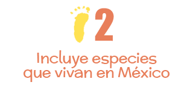

Atención si vives en México y tienes entre 6 y 15 años,
o si eres mexicano pero vives en otro país, puedes participar en las siguientes categorías:
Niños de 6 a 9 años
Niños de 10 a 12 años
Niños de 13 a 15 años
Premios
Para cada categoría de edad

|

|

|
Además será seleccionada la mejor ilustración de cada estado. Las nueve ilustraciones ganadoras más las 32 seleccionadas de los estados formarán
la exposición digital "Entre azul y verde".
¿Quieres participar? Es muy sencillo, sigue estos 5 pasos:
TEMAS Y ESPECIES

- ¡También somos mexicanos!
Muchas especies tienen su origen en México pero también pueden vivir en otros países. A ellas les llamamos nativas. Otras especies viven solamente en México y se conocen como endémicas. Pueden vivir en un solo lago, en una montaña, en una cueva o cenote ¿Conoces algunas? ¿Dónde viven? ¿Con quién se relacionan? ¿Cuáles son sus problemas? ¿Cómo las ayudamos? ¡Ilústralo! - Nos alimentamos de naturaleza
México es hogar de muchas culturas indígenas que, a través de miles de años, han producido numerosas variedades de maíz, frijol, calabaza, chile y de otras especies de las cuales nos alimentamos. De estas especies se desarrolló nuestra exquisita cocina tradicional mexicana. ¡Mmmmhhhh que rico! ¿Cómo se producen? ¿Cómo llegan a nuestros platillos? - ¡Los marcianos llegaron ya!
Las especies exóticas son las que no se originaron en México. Han sido introducidas de otros países, a propósito, o accidentalmente a través de barcos, aviones, carros y otros medios de transporte. Algunas se comportan más amigablemente que otras, pero en su gran mayoría se vuelven un verdadero problema, ya que compiten, depredan, parasitan, transmiten enfermedades, cambian el hábitat o terminan con las especies nativas. ¡Incluso nuestras mascotas pueden convertirse en especies invasoras! ¿Qué podemos hacer para que no causen daños? - Los ecosistemas donde vivo
Un ecosistema es un lugar en donde conviven plantas y animales, entre ellos y con el suelo, agua, clima de la región. Vivimos en ecosistemas y somos parte de ellos. El aire que respiramos, el agua que bebemos, los alimentos que consumimos... Todos vienen del ecosistema. ¿Qué plantas y animales son parte de tu ecosistema? ¿Cómo podemos mejorar los ecosistemas, para tener una mejor convivencia? ¿Cómo podemos reducir la generación de basura, la contaminación y promover más acciones amigables con la naturaleza? - La ciudad también es un ecosistema
Muchos mexicanos crecemos en las ciudades, por lo que no nos damos cuenta que también estamos rodeados de plantas y animales en parques, camellones y otros sitios. ¿Conoces a tus vecinos verdes? Todos los días cuando vas a la escuela, cuando regresas a tu casa, cuando sales a caminar por la ciudad, estás rodeado de vecinos verdes (plantas y animales) que viven en la ciudad. ¿Cómo podemos mejorar el ambiente de la ciudad, para convivir más con las plantas y animales citadinos? - Démosle una mano
Nuestros ecosistemas como las selvas, bosques, matorrales, pastizales, arrecifes y manglares, han sido reducidos y destruidos debido a nuestras actividades cotidianas: contaminamos, consumimos demasiado y producimos basura en exceso. Las especies más frágiles se están quedando sin hogar y podrían extinguirse. ¿Qué podemos hacer para ayudarlas? ¿Qué cambios podemos hacer todos los mexicanos, para no seguir destruyendo nuestro ambiente? ¿Cuáles serían tus propuestas?
Puedes inspirarte visitando las ligas: México, el país de las maravillas www.paismaravillas.mx, EncicloVida www.enciclovida.mx y Biodiversidad mexicana www.biodiversidad.mx
- Tamaño Doble carta dimensiones: 28 cm x 43 cm
- Tamaño Carta dimensiones: 28 cm x 21.5 cm
- Sin marcas de agua
- Sin alteraciones digitales
- Título de la obra
- Nombre completo y edad
- Domicilio (calle, número, colonia, delegación o municipio, código postal, estado)
- Teléfono de contacto
- Correo electrónico
- Medio por el cual te enteraste del concurso (redes sociales, convocatoria física, radio, televisión, página de internet)
- Pensamiento sobre lo que te gustaría hacer por la naturaleza de México
- La madre, padre o tutor, debe de incluir su nombre y firma acompañado de la siguiente leyenda: Autorizo la participación de mi hijo/a, acepto las bases y otorgo mi conformidad a lo expuesto en ellas.
- Recepción de trabajos del 1 de marzo al 30 de abril de 2018
(después de esta fecha no se recibirán más trabajos), en las siguientes sedes: - 1. La oficina de correos más cercana a tu localidad especificando el siguiente domicilio: CONABIO Liga Periférico-Insurgentes Sur, Núm. 4903, Col. Parques del Pedregal, Delegación Tlalpan, 14010, Ciudad de México.
- 2. Programa Alas y Raíces de tu estado (Secretaría de Cultura) enlaceestados@cultura.gob.mx
- 3. Delegaciones estatales del Consejo nacional para el Fomento Educativo (CONAFE) asegrera@conafe.gob.mx
Reconocimiento especial por estado
Será seleccionada la mejor ilustración de cada estado (32 seleccionadas) y participará en la exposición Visiones de nuestra naturaleza.